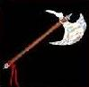

|  |
|
|
|
|
This item is found on level 11 or deeper, and is "Rare".
(Commonality value of 10)
This item can be dropped by:
Cannibal, Gorguni, Mengu-Ogre, Assassin, Harpy, Shadow of Death, Arch-Fiend, Fire Lord, Coutal, Slither, Ice Dragon, Beechi, Iron Bear, Wolf Spider, Lich, Night Screamer, Lamurian Soldier, Lamurian Guard, Destroyer of the Deep, Griffin, Ancient Guardian, Werebear, Life Shifter, Master Thief, Elven Lord, Warlord, T'Butu,
Use your browser's BACK button to get back